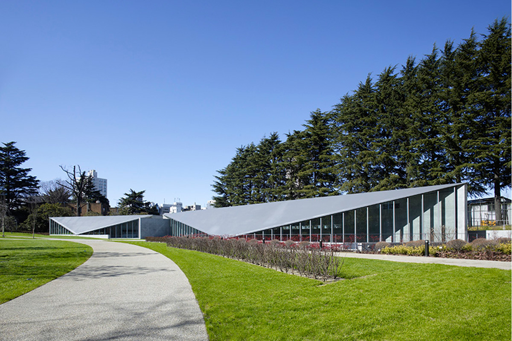
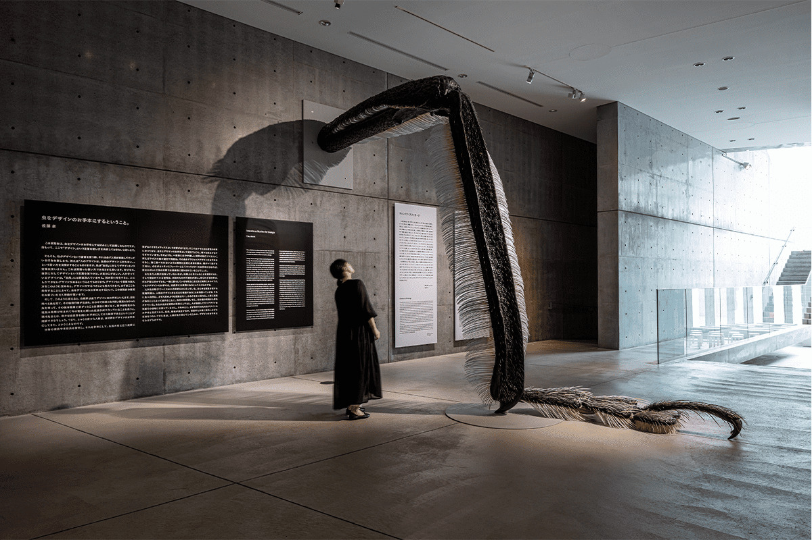
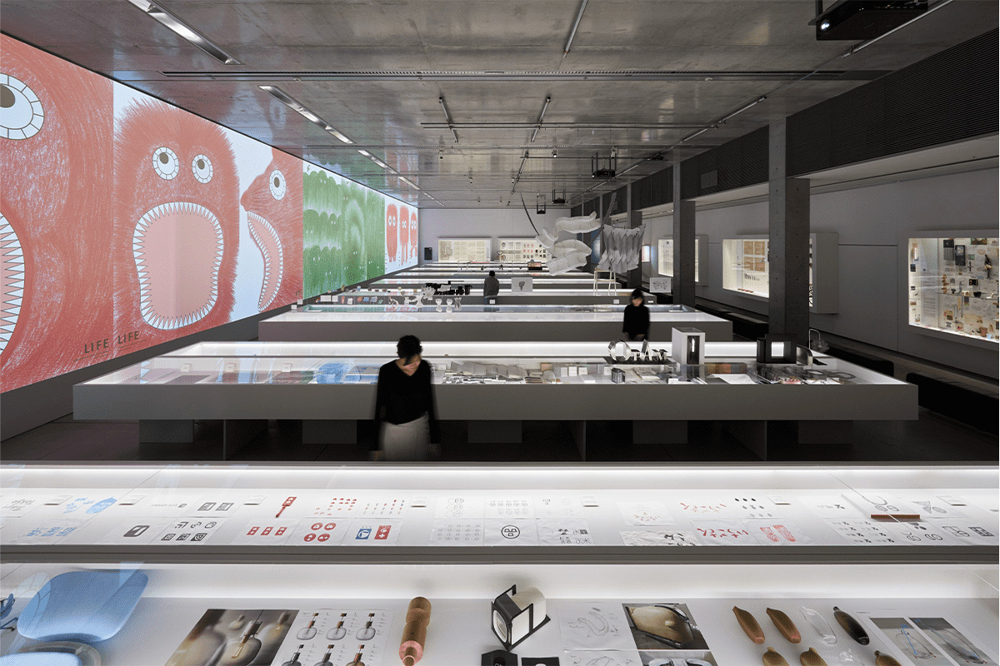
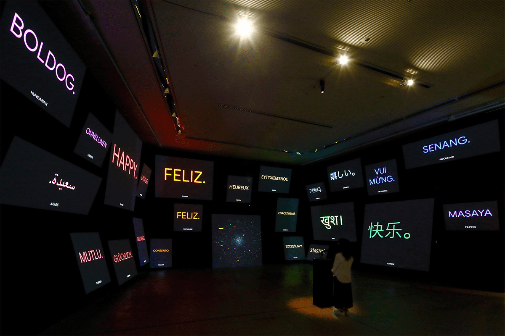
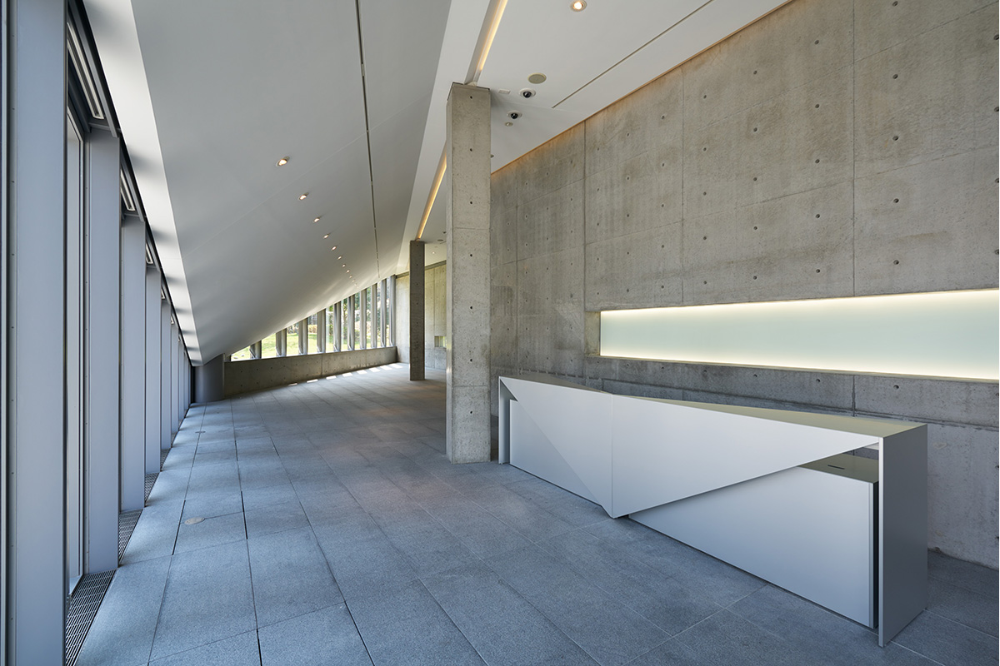

Токио · Роппонги · музей
21_21 DESIGN SIGHT в Роппонги: дизайн повседневных вещей в здании Тадао Андо

В Токио много музеев, и смотреть в них можно не только работы, но и архитектуру. 21_21 DESIGN SIGHT в Роппонги показывает дизайн через самые обычные вещи и события, чтобы по-новому увидеть то, что окружает человека каждый день.
Музей
Дизайн, который начинается с будней
21_21 DESIGN SIGHT стоит в Midtown Garden, зелёном саду комплекса Tokyo Midtown в Роппонги. Программу музея в 2021 году вели три известных дизайнера: модельер Иссэй Мияке (1938–2022), автор идеи одежды из «одного куска ткани», Таку Сато и Наото Фукасава. Помогала им журналистка, которая пишет о дизайне. Выставки рождаются из их споров и обсуждений.

Название «дизайн-сайт» объясняет подход. Музей берёт повседневные события и предметы и смотрит на них глазами дизайнера, а уже из этого вырастают необычные программы, где одну тему разглядывают с разных сторон.
Многое здесь можно не только смотреть, но и делать самому: на интерактивных выставках, встречах с авторами и мастер-классах посетители и организаторы работают вместе. В итоге музей становится местом, где дизайн помогает заметить новое и предлагает свои ответы.


Здание
Архитектура из «одного куска ткани»
Само здание тоже стоит внимания. Тадао Андо взял за основу идею Иссэя Мияке шить одежду из «одного куска ткани», и крыша музея словно сложена из одного согнутого листа. При строительстве применили японские технологии, которые относятся к лучшим в мире, поэтому рассматривать стоит не только выставки, но и сам дом, и его залы.
Галерея 3
Место для совместных проектов
В марте 2017 года у музея появилось ещё одно пространство, Галерея 3. Здесь идут программы вместе с крупными производственными компаниями Японии и других стран, а также с учебными, научными и культурными организациями.

21_21 DESIGN SIGHT
- Адрес
- Токио, Минато, Акасака, 9-7-6, Tokyo Midtown, Midtown Garden
- Телефон
- +81 3-3475-2121
- Часы работы
- 10:00–19:00 (вход до 18:30), во время событий могут меняться
- Выходные
- вторник, новогодние праздники, дни смены экспозиции
- Цены / Вход
- взрослые 1200 иен, студенты 800 иен, старшеклассники 500 иен, дети младше старшей школы бесплатно (зависит от программы)
- Как добраться
- 5 минут пешком от станции Роппонги линии метро Хибия и других линий или от станции Ногидзака линии Тиёда. Парковки нет.
Фото: Сатоси Асакава, Масая Ёсимура, Кэйдзо Киоку.